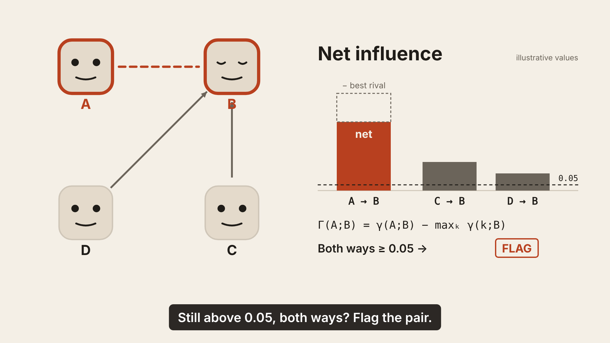
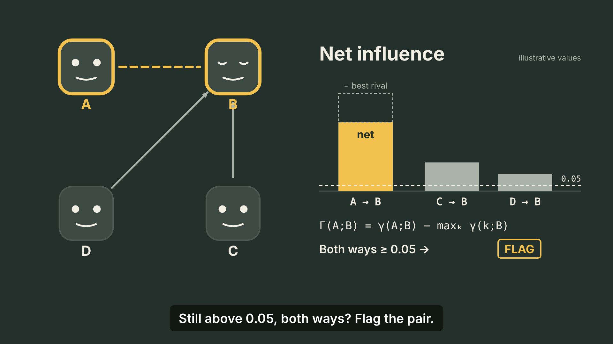
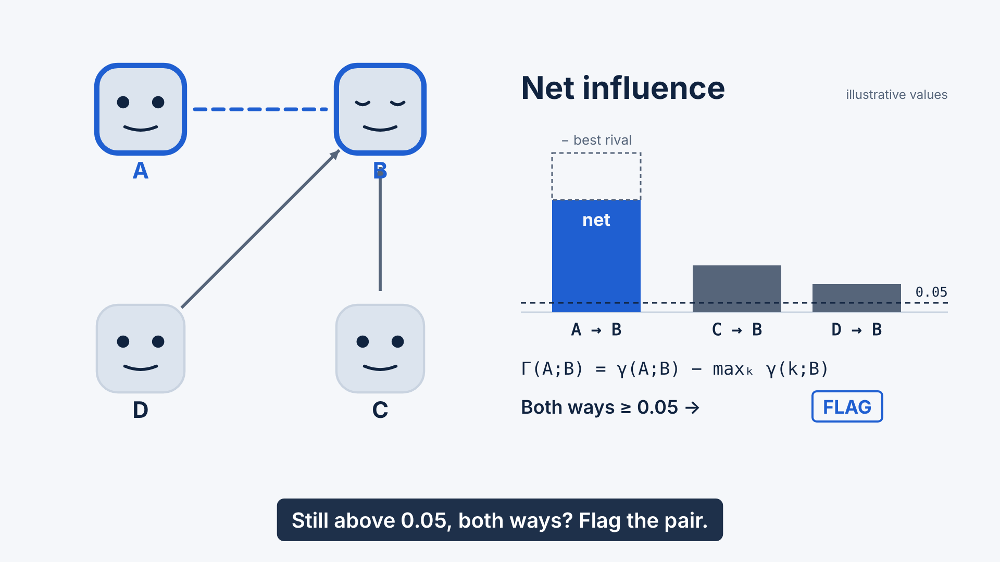

Directions at the same beat (S04, t = 34.5 s, "flag the pair")
Same layout, same timeline, three token sets (src/tokens.js, ?dir=a|b|c). Decision log in DECISIONS.md.

A · Paper & ink — chosen. Warm and friendly, matches the lighthearted brief; coral accent reads as "suspicious" without alarm-red.

B · Chalkboard. Good contrast but reads as a lecture; yellow accent competes with the captions' dark box.

C · Blueprint. Clean but corporate; blue accent loses the "something is off" signal.